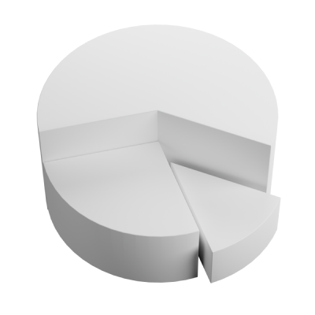
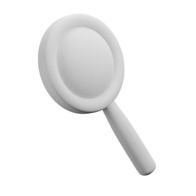
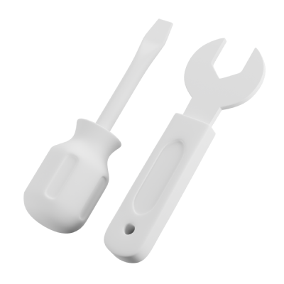
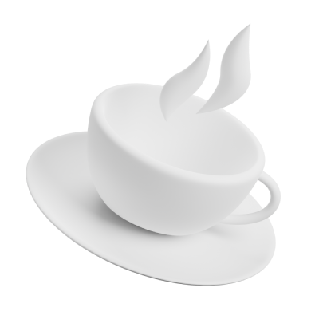

Fractional Data & AI Leadership · Open to new conversations
Vikram Rathour
I walk alongside enterprise teams through the three pivots where most AI programmes stall.
02Thesis
Three pivots.
Most programmes are wrestling with one of them.
- Pilot→ProductionMake it real
- Initial→IndustrialisedMake the second one cheaper
- Managed→ResilientMake it survive without me

03Work
Nine times through these pivots.
- The data was fine. The accountability wasn't.Major bank
- A capable platform nobody would use.National tax authority
- The argument was political, not technical.Global lakehouse

04Impact
What changed after I left the room.
2×Business-unit growth in one fiscal year
ZeroDowntime across a 50TB migration
40%→0Manual overrides on a fraud platform

05Point of View
I do the homework before I give you advice.
- The Production BlueprintSeven decisions
- Three technical papersAgents · models · the stack
- Seven essaysWriting

06Builds
I don't just architect it. I build it.
- sentinel_dqData quality for AI
- OrionData_WebappORIAN.Data in the browser
- CKDTrackerBuilt as a transplant recipient
07Working together
Three ways we can work together.
- Foundations4 to 8 weeksWhen several AI pilots give your leadership different answers to the same question.
- Reliability3 to 6 weeksWhen your agent shines in the demo and falters in production.
- Direction4 to 8 weeksWhen your data, BI, AI and automation investments no longer pull in the same direction.

08Let's talk
Which pivot feels hardest right now?
Most conversations begin with a 45-minute call where I listen first, then tell you honestly whether I can help.
Vikram RathourRathour.vikram@gmail.com · Pune, India
© 2026 Vikram RathourGitHubWordPress
Read everything in detail